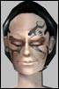

| Author | Thread |
Snarf
Supa Leet
Registered: May 2001
Posts: 399 | quote:
Because it's fashionable to have a "Girl with Attitude" as your leading lady role. Even though it's terribly cliche'd the Americans love it and as funcom have shown with their lack of in game events for anyone outside the U.S. , this is clearly the only market that they are prepared to cater for
ATTITUDE? Eleena has a freakin' speech impediment, not ATTITUDE.
"I uhh, yeah, i have the uh, cookies. yeah, uhm.. yeah, I, yeah, uhhh, yeah. The, uh, cookies. Right. Yeah. I uhh, can't uhhh.. well, speak, uh more, ehm, than two or uhhh three uhm words, yeah, at a, uhm time. Right. Yes. Uhhhm. Yeah. Shoot me, uhm, now."
Snarf |
D.Shaffer
SoleetRegistered: Nov 2001
Posts: 102 | Re: Dust to Dust, Beer and Booze quote:
Originally posted by Brad, STL/MO
And nah, that made perfect sense to me -- assuming that the cyborgs have their own insurance terminal, anyway. On a planet with eternal life, once you get out past the suppression gas religious arguments probably do turn into eternal gun fights. Wanna bet that Mack and The Friendly Cyborg have been killing each other off and on for weeks? No wonder the cyborg was breathing hard; he probably just ran here from Cobal Sands after the previous phase of their argument.
Was this the highpoint of the movie series to anyone else?
"Arent you going to call me 'filthy human' and crush my skull?"
"Do you want me to call you 'filthy human' and crush your skull?"
"MINDLESS ABOMINATION!"
"FILTHY HUMAN!"
Had me in stitches  |
Windie
SoleetRegistered: Dec 2001
Posts: 135 | probably been posted elsewhere the bar's in Mort, and is mayhem... So we can have the bar room brawls we've dreamed of (just neet to have beer mugs as weapons) sorry don't remember the coords. Huge holes in the walls too Last edited by Windie on December 21st, 2001 at 00:31 |
Wiretrip
Leetas
 Registered: Nov 2001
Posts: 73 | hate I dont hate just Elena, I think all the voice actors suck (except for the guys who play Ross and Radiman , theyre pretty good). The guy with the long face, they need a new actor for him. The guy they already have has a somewhat pleasent voice; doesnt make me think the character is evil at all  . If you havent noticed he did the voice for the cyborg too... once again doesnt make me believe in it. But Elena IS the worst of all.
I guess FC thinks the hero of RK is a **** who looks and sounds like Elen Degeneres (my pun earlier). And why are those movies so shaky? In that one scene where the sexy doc is talking to the other doc, his arm was spasming all over the place! I do like however how you decided to change the credit music. The rest of the music seems kind of stupid though. Was that music suppose to make us feel scared when that cyborg walked behind her? And the devlopers are way too original they use the same music that's in-game. I dont even listen to that crap any more so why not try something different?
Dont get me wrong I would like to see more movies but like the game, it needs improvement.
P.S. Funny stuff Snarf thats exactly how she acts! LOL  |
Laeni
Supa Leet
 Registered: Nov 2001
Posts: 541 | Well here's a third American who finds Eleena vastly annoying. I don't know if it's the fault of the actress though or the fault of the dialogue she has to work with. Perhaps it's a combination of both.
I think that the best voice actor in the series is David Smyrl (who plays Henry Radiman) followed by Alex Kroll (Philip Ross).
I do hope that they keep making the movies. Especially since they ended this series by blowing up a sizable chunk of Omni-1 Entertainment! |
Cloudeh
Supa Leet
 Registered: Nov 2001
Posts: 1625 | You forgot about the Gay Cyborg in the bar |
CaptFallout
SoleetRegistered: Nov 2001
Posts: 204 | Yay, blow up a building that were marked "Apartments" and "guild houses".
You all know what this means?
Even longer till apartments have a use and guild houses exist.
Oh, and mutants attacking is about as crappy as events can get. At least only one of the four zones crashed and locked people out... that's gotta be a record for a fighting event!
Next week: Mutant Slugs and some unimportant building in Tir gets knocked down by a tornado made of nanobots!
Rock on creativity! WE LOVE YOU! |
Orb!t
EleetRegistered: Nov 2001
Posts: 36 | quote:
Originally posted by Dr.Log
If the clan does not hand over the terrorists immediately, Omni tek will be forced to view the clans as the terrorist and bomb them into submission. 
yeah, but then again.. if it's anything like the current events more then half of the afghans.. uhm clanners would probably switch sides within minutes of the bombing.. |
Orb!t
EleetRegistered: Nov 2001
Posts: 36 | btw, for all u clanners with yalms.. watch out for tall buildings.. |
Billy Talent
Supa LeetRegistered: Nov 2001
Posts: 223 | Re: probably been posted elsewhere quote:
Originally posted by Windie
the bar's in Mort, and is mayhem... So we can have the bar room brawls we've dreamed of (just neet to have beer mugs as weapons) sorry don't remember the coords. Huge holes in the walls too
Yes, you are right it is in mort in the town named Hope. It makes perfect sense since the bar has zero suppression gas. In the movie the borg was allowed to fight in the bar because there was no suppression gas and no guards. This is true in the game too. The new bar in hope is great for some bar brawls. Hope is located 2900 1800 NE from mort grid. I am not 100 percent on those coords, but they are roughly in that area.
Cap, you omni scum, the attack to clan cities was obviously omni driven. I found it interesting how they tried to set us up by cloning Patk9 (clan) and sending him to lead the attack on Tir. I found a cloning facality in the omni mines around the area of the longest road. |
killahsin
SoleetRegistered: Dec 2001
Posts: 109 | "You make it sound like Funcom is capable of better but is purposefully "dumbing it down". I disagree. I think Funcom isn't capable of writing a more complex and interesting character because they aren't American.
Or was that blatant stereotyping"
Obviously you havent read the book. |
Naima
Soleet
 Registered: Nov 2001
Posts: 45 | Ragnar Tornquist is a great storyteller, hands down |
Brad, STL/MO
Phear Leet
 Registered: Nov 2001
Posts: 279 | Yeah, but I agree, but you'd never know it from these awful short animations. |
All times are GMT.


 Last Thread Next Thread
Last Thread Next Thread 
 December 20th, 2001 21:27
December 20th, 2001 21:27